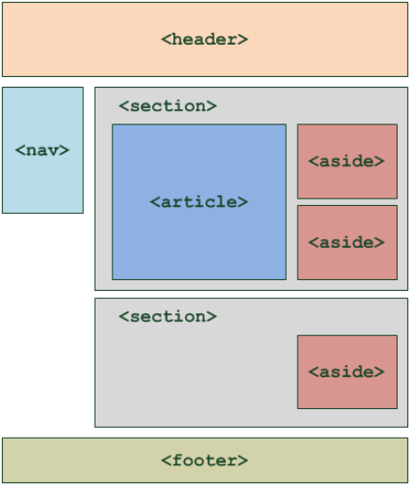

Introduction
HTML (HyperText Markup Language) : il a fait son apparition dès 1991 lors du lancement du Web. Son rôle est de gérer et organiser le contenu. C'est donc en HTML que vous écrirez ce qui doit être affiché sur la page : du texte, des liens, des images… Vous direz par exemple : « Ceci est mon titre, ceci est mon menu, voici le texte principal de la page, voici une image à afficher, etc. ».
Les versions de HTML
- HTML 1 : c'est la toute première version créée par Tim Berners-Lee en 1991
- HTML 2 : la deuxième version du HTML apparaît en 1994 et prend fin en 1996 avec l'apparition du HTML 3.0. C'est cette version qui posera en fait les bases des versions suivantes du HTML. Les règles et le fonctionnement de cette version sont donnés par le W3C (tandis que la première version avait été créée par un seul homme)
- HTML 3 : apparue en 1996, cette nouvelle version du HTML rajoute de nombreuses possibilités au langage comme les tableaux, les applets, les scripts, le positionnement du texte autour des images, etc
- HTML 4 : cette version aura été utilisée un long moment durant les années 2000. Elle apparaît pour la première fois en 1998 et propose l'utilisation de frames (qui découpent une page web en plusieurs parties), des tableaux plus complexes, des améliorations sur les formulaires, etc. Mais surtout, cette version permet pour la première fois d'exploiter des feuilles de style, notre fameux CSS !
- HTML 5 : c'est LA dernière version. De plus en plus répandue, elle fait beaucoup parler d'elle car elle apporte de nombreuses améliorations comme la possibilité d'inclure facilement des vidéos, un meilleur agencement du contenu, de nouvelles fonctionnalités pour les formulaires, etc. C'est cette version que nous allons découvrir ensemble.
Organiser son texte
Les paragraphes
La plupart du temps, lorsqu'on écrit du texte dans une page web, on le fait à l'intérieur de paragraphes. Le langage HTML propose justement la balise
<p>pour délimiter les paragraphes.
Sauter une ligne et espace
Le saut de ligne dans le code source sera interprété comme un espace.
<br>Pour obtenir un simple retour à la ligne on utilise la balise Les paragraphes sont définis par la balise
<p>qui permet de séparer le paragraphe du reste du texte par un espace eu haut et en bas L’élément
<hr>permet aussi un retour à la ligne, en insérant une ligne horizontale permettant de délimiter par exemple une nouvelle section.
Les titres
<h1>à
<h6>:correspondent à des titres (heading en anglais) de niveaux différents.
<h1>est un titre de premier niveau,
<h2>un titre de deuxième niveau, et ainsi de suite jusqu’au petit dernier
<h6>. Ils possèdent une forte valeur sémantique et doivent être utilisés là où un titre de document ou de section est nécessaire.
Remarque :
Attention : ne confondez pas avec la balise
<title>! La balise
<title>affiche le titre de la page dans la barre de titre du navigateur comme nous l'avons vu. Les titres
<h1>et compagnie, eux, servent à créer des titres qui seront affichés dans la page web.
Mettre en valeur
Mettre un peu en valeur
Pour mettre un peu en valeur votre texte, vous devez utiliser la balise
<em> </em>. Son utilisation est très simple : encadrez les mots à mettre en valeur avec ces balises et c'est bon !
Mettre bien en valeur
Pour mettre un texte bien en valeur, on utilise la balise
<strong>qui signifie fort , ou important si vous préférez. Elle s'utilise exactement de la même manière que
<em>.
La structure d'une page html
Nous approchons de plus en plus du but. Si nos pages web ne ressemblent pas encore tout à fait aux sites web que nous connaissons, c'est qu'il nous manque les connaissances nécessaires pour faire la mise en page. En général, une page web est constituée d'un en-tête (tout en haut), de menus de navigation (en haut ou sur les côtés), de différentes sections au centre… et d'un pied de page (tout en bas). Dans ce chapitre, nous allons nous intéresser aux nouvelles balises HTML dédiées à la structuration du site. Ces balises ont été introduites par HTML5 (elles n'existaient pas avant) et vont nous permettre de dire : « Ceci est mon en-tête », « Ceci est mon menu de navigation », etc.
Je vais vous présenter ici les nouvelles balises introduites par HTML5 pour structurer nos pages. Vous allez voir, cela ne va pas beaucoup changer l'apparence de notre site pour le moment, mais il sera bien construit et prêt à être mis en forme ensuite !
L'en-tête
La plupart des sites web possèdent en général un en-tête, appelé header en anglais. On y trouve le plus souvent un logo, une bannière, le slogan de votre site… Vous devrez placer ces informations à l'intérieur de la balise<header>.
Remarque :
Il peut y avoir plusieurs en-têtes dans votre page. Si celle-ci est découpée en plusieurs sections, chaque section peut en effet avoir son propre
<header>.
le pied de page
La balise <footer>
a l'inverse de l'en-tête, le pied de page se trouve en général tout en bas du document. On y trouve des informations comme
des liens de contact, le nom de l'auteur, les mentions légales, etc.
Principaux liens de navigation
La balise<nav>
doit regrouper tous les principaux liens de navigation du site. Vous y placerez par exemple le menu principal de votre site.
Généralement, le menu est réalisé sous forme de liste à puces à l'intérieur de la balise
<nav>.
Une section de page
Les contenus regroupés entre <section> et <section>
sont liés entre eux.
Les éléments de sections délimitent les zones du document possédant une valeur sémantique particulière.Chaque section possède
un rôle précis, et peut être utilisée une à plusieurs fois dans le document.
Les avantages :
le code source est plus clair, les différentes parties composant un document sont clairement identifiées.
En accroissant la valeur sémantique, on augmente aussi les possibilités d’analyse du contenu et de référencement.
Informations complémentaires
La balise<aside>
est conçue pour contenir des informations complémentaires au document que l'on visualise. Ces informations sont
généralement placées sur le côté (bien que ce ne soit pas une obligation).
Il peut y avoir plusieurs blocs
<aside>dans la page.
Un article indépendant
La balise<article>
sert à englober une portion généralement autonome de la page. C'est une partie de la page qui pourrait ainsi
être reprise sur un autre site. C'est le cas par exemple des actualités (articles de journaux ou de blogs).
Résumé
Voila un petit schéma (figure suivante) pour vous aider à retenir leur rôle !
Les balises html
| Balise | Description |
|---|---|
| html | Balise principale |
| header | En-tête de la page |
| body | Corps de la page |
| Balise | Description |
|---|---|
| link | Liaison avec une feuille de style |
| meta | Métadonnées de la page web (charset, mots-clés, etc.) |
| title | Titre de la page |
| script | Code JavaScript |
| style | Code CSS |
| Balise | Description |
|---|---|
| ul | Liste à puces, non numérotée |
| ol | Liste numérotée |
| li | Élément de la liste à puces |
| dl | Liste de définitions |
| dt | Terme à définir |
| dd | Définition du terme |
| Balise | Description |
|---|---|
| table | Tableau |
| caption | Titre du tableau |
| tr | Ligne de tableau |
| th | Cellule d'en-tête |
| td | Cellule |
| thead | Section de l'en-tête du tableau |
| tbody | Section du corps du tableau |
| tfoot | Section du pied du tableau |